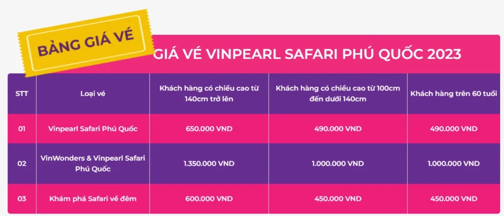
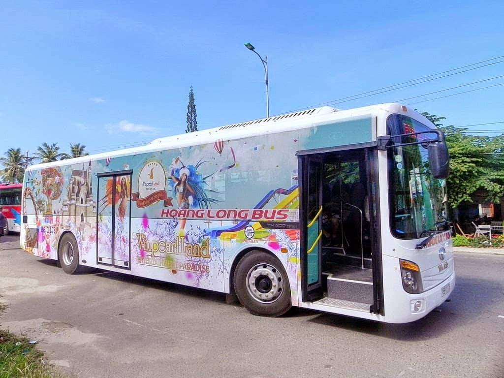
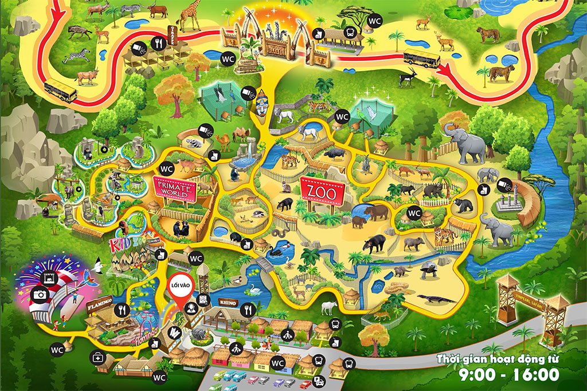
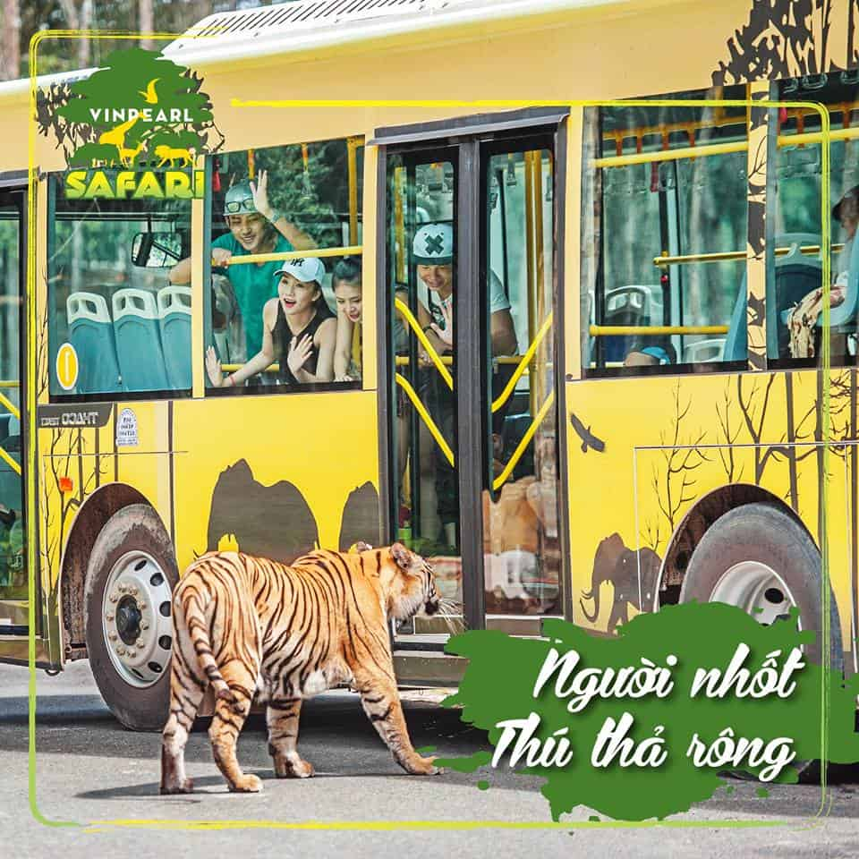
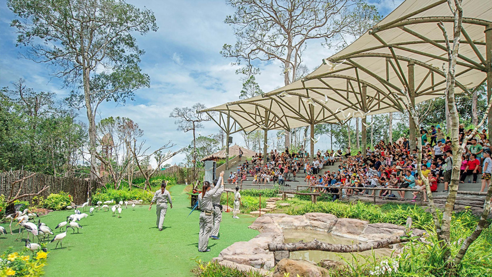

THAM QUAN CÁC KHU VỰC KHÁC NHAU CỦA CÔNG VIÊN
XEM CÁC BUỔI BIỂU DIỄN XIẾC: HUƠU, KHỈ, VOI,...
THAM GIA VÀO CÁC HOẠT ĐỘNG GIẢI TRÍ: ĐI XE JEEP, ĐI TÀU
LỬA,...
THAM QUAN KHU VỰC THÚ HOANG DÃ: HƠN 100 LOÀI ĐỘNG VẬT
TRẢI NGHIỆM CẢM GIÁC "NHỐT NGƯỜI THẢ THÚ"
TRẢI NGHIỆM SAFARI ĐỘC ĐÁO
THAM QUAN KHU VỰC THÚ NUÔI: CỪU, DÊ, LỢN, GIA CẦM,...
LỊCH TRÌNH CỦA TOUR
- Nếu bạn đặt phòng tại Vinpearl Phú Quốc thì từ đây chỉ cách Vinpearl
Safari chừng khoảng 5km. Do đó, chỉ cần 8 -10 phút di chuyển bằng taxi là đã có thể
đến vườn thú.
- Nếu bạn di chuyển từ thị trấn Dương Đông: đi theo đường Cách Mạng
Tháng Tám đến Dương Đông – Cửa Cạn. Sau đó rẽ trái, đi thẳng là có thể đến công viên
Vinpearl Safari Phú Quốc (khoảng cách từ thị trấn Dương Đông tới Vinpearl Safari tầm
23km). Nếu muốn tiết kiệm, bạn có thể lựa chọn hình thức di chuyển bằng xe bus
Vinpearl Phú Quốc miễn phí từ thị trấn Dương Đông. Hãy tìm hiểu thật kỹ lịch trình
xe bus đến Safari Phú Quốc để thuận tiện trong việc đi lại, tránh bị lỡ xe.
- Trong khu vườn bách thú các bạn có thể đi bộ để thăm quan, tuy nhiên
vì vườn bách thú rất rộng nên các bạn nên thuê xe điện riêng, hoặc đi xe điện ghép
để vào thăm quan nhé. Giá thuê xe điện riêng là 1,5 triệu/ xe/ 7 người, còn giá đi
xe điện ghép là 100K/ người thôi, xe điện chạy khá chậm để cho bạn vừa đi vừa thăm
quan.
- Đi thăm quan hết khu bách thú rồi các bạn sẽ đến khu vực bán hoang dã
Safari, tại đây bạn sẽ đi thăm quan bằng xe buýt chuyên dụng, cứ mỗi 30 phút sẽ có
một chuyến. Ở đây có nhiều trạm dừng chân để bạn nghỉ ngơi và chờ xe tới, các bạn có
thể mua đồ ăn nhanh, nước uống tại đây, nhưng lưu ý chỉ ăn nhanh tại đây không được
mang vô nha các bạn.
- Trong lúc chờ đợi các bạn có thể thưởng thức các màn trình diễn văn
nghệ, các vũ công từ Nam phi biểu diễn vũ điệu Zalu
- Chúng ta phải đi qua 2 cánh cổng để vào khu bán hoang dã, các cánh
cửa đều điều khiển bằng tay để đảm bảo an toàn và linh hoạt trong việc sử lý các sự
cố không may nếu có. Tính an toàn ở Vinpearl Safari Phú Quốc rất cao nên bạn yên
tâm.
- Khu Safari bán hoang dã có nhiều loài thú ăn thịt và ăn cỏ khác nhau
được nhốt riêng theo từng phân khu riêng biệt để đảm bảo an toàn, chỗ nào có thú thì
xe sẽ đi rất chậm để bạn có thể quan sát và quay phim chụp ảnh, khác với các vườn
thú khác thường thì các con thú nguy hiểm được nhốt trong các chuồng kiên cố, ngược
lại tại Vinpearl Safari Phú Quốc các con thú sẽ được thả tự do trong khu riêng biệt
và các bạn bị nhốt trong chiếc xe buýt chuyên dụng.
BẢNG GIÁ VÉ CỦA TOUR

NGÀY 1:
TRẢI NGHIỆM TOÀN BỘ TOUR
08h00
Xe đưa đón từ khách sạn đến Vinpearl Safari Phú Quốc.
08h30
Đến Vinpearl Safari Phú Quốc, đăng ký và nhận vé vào
cổng.
Vinpearl Safari Phú Quốc gồm 2 phân khu chính:
Vườn thú mở (Open Zoo): khu này tương tự như thảo cẩm viên ở Sài Gòn hay vườn Bách
Thảo ở Hà Nội, nhưng quy mô vườn thú ở dạng mở nên rộng hơn, nhiều thú hơn rất nhiều
; Khu Safari (Safari Park): chỉ là bán hoang dã thôi vì các con thú vẫn được sống
trong môi trường tự nhiên như ở trong khu sinh trưởng của nó nhưng dưới sự kiểm soát
và quan tâm chăm sóc của các nhân viên vườn thú.

Xe shuttle bus đưa đón đi ở Vinpearl Safari Phú Quốc
Quy hoạch với 10 phân khu nhỏ bao gồm:
- Khu Nam Á (Ấn Độ): nơi nuôi các loại thú từ Ấn Độ
- Khu Châu Phi hoang dã: nơi nuôi các loại thú hoang dã từ Châu Phi như
hổ, báo...
- Khu đồng cỏ Châu Úc
- Khu vườn Eden
- Khu nuôi thú Nam Mỹ - Amazon
- Khu bản địa Việt Nam
- Khu thánh địa cổ
- Khu cảnh quan cung đình
- Khu vườn chim và khu vườn thú đêm

Bản đồ Vinpearl Safari Phú Quốc
Và mỗi phân khu được sắp xếp và trang trí theo lối kiến trúc
của mỗi vùng và đảm bảo môi trường sống phù hợp với địa điểm đó. Ngoài việc phải ngoại nhập
các cá thể động vật, Vinpearl Safari còn phải nhập khẩu cả hơn 400 loài thực vật từ thảm
thực vật đến những cây lớn để đảm bảo môi trường sống phù hợp cho các loài động vật của từng
phân khu.
Ngoài những phân khu theo khu vực, Vinpearl Safari còn có
những phân khu chức năng như: khu chuồng cách ly kiểm dịch, khu phố mua sắm sản phẩm du lịch
và bệnh viện thú y lớn nhất Đông Nam Á để đảm bảo sức khỏe tốt nhất cho những “thú hoang bản
địa” và “thú hoang ngoại quốc” ở đây.
Trải nghiệm cảm giác "nhốt người thả thú" độc nhất vô
nhị
Với khu bán hoang dã, du khách sẽ được dịp thăm thú những loài
thú hoang với “quốc tịch” ở những vùng, châu lục khác nhau như Châu Phi, Châu Úc, Châu
Mỹ…như hổ Bengal, linh dương A Rập, linh dương sừng xoắn, vượn cáo trắng đen…theo hình thức:
“người nhốt, thả thú”.
Du khách sẽ được trải nghiệm những cảm giác mạnh khi những chú hổ với móng vuốt sắc nhọn vờn
quanh. Nhưng hãy yên tâm vì bạn hoàn toàn được đảm bảo an toàn với những chiếc xe được thiết
kế lưới bảo vệ hết sức chắc chắn.

Trải nghiệm cảm giác "nhốt người thả thú"
NHỮNG SHOW BIỂU DIỄN TẠI VINPEARL SAFARI PHÚ QUỐC
+ Show biểu diễn động vật
Nếu bạn muốn ngắm nhìn những cú sải cánh ngoạn mục của Toucan,
Hồng Hoàng, ... hoặc sự nghịch ngợm đáng yêu của Rái cá, Cầy mực – những con thú bạn sẽ
chẳng bao giờ thấy trong rạp xiếc, thì đừng quên chọn một chỗ ngồi thật đẹp vào khung giờ
sau đây:
- Thứ 3 – Chủ nhật: 10:00 – 10:30 và 14:30 – 15:00
- Thứ 2: 10:00 – 10:30
- Địa điểm: Sân khấu phía sau hồ Hồng hạc

Show biểu diễn động vật
+ Biểu diễn nhảy Zulu hoang dã
Cơ hội để bạn có thể khám phá một nét văn hóa độc đáo của
người dân châu Phi đã có rồi! Bạn có thể đến ngay Vinpearl Safari để cảm nhận buổi biểu diễn
náo nhiệt vào thời gian sau:
- Show 1: 9:20 – 9:50 tại khu vực cổng vào
- Show 2: 11:30 – 11:50 tại khu vực nhà chờ số 3 – khu Bán hoang dã
- Show 3: 15;30 – 16:00 tại khu vực cổng vào
+ Chụp ảnh checkin với các loài thú quý hiếm
Nếu ở những vườn thú thông thường khác, bạn sẽ chỉ được chụp
ảnh với những loài động vật qua khung sắt, thì đến với Vinpearl Safari Phú Quốc bạn có thể
tha hồ check in chụp ảnh mà không bị vướng khung sắt. Những bạn động vật đáng yêu mà bạn có
thể check in cùng như: vẹt xanh vàng Macaw, trăn bạch tạng, thằn lằn savannah,.... Thông tin
chụp ảnh checkin:
- Sáng: 11:00 - 12:00 (Hàng ngày)
- Chiều: 15:00 - 16:00 (Hàng ngày, trừ thứ 4)
Địa điểm:
Chòi chụp ảnh Kidzoo
Mức phí:
50.000 VNĐ/người/lần
Checkin với động vật hoang dã
+ Gặp gỡ và tương tác với các loài động vật dễ thương
Không giống trải nghiệm “nhốt người, thả thú”, ở khu vực tương
tác với động vật này, bạn sẽ được tiếp xúc với các loài động vật ở cự ly gần. Bạn có thể tự
tay cho voi, vượn hay hươu cao cổ ăn. Không chỉ có vậy, bạn còn có thể ‘sống ảo” với chúng
để cho ra những bức ảnh để đời nữa đó.
Địa điểm:
Chuồng voi/ Chuồng Vượn cáo đuôi khoang/ Nhà hàng Giraffes
Mức phí:
30.000 VNĐ/phần ăn
- Cho hươu cao cổ tại nhà hàng Giraffes ăn: 9:00 - 16:00
- Cho voi ăn tại nhà hàng Voi: 9:00 - 16:00
+ Tham quan khu bảo tồn hoang dã và khu thăm thú baby
Vì Vinpearl Safari Phú Quốc là địa điểm nuôi dưỡng và bảo tồn
động vật hoang dã lớn nhất Việt Nam. Do đó, nơi đây cũng “kết duyên” cho rất nhiều cặp đôi
để sinh sản ra thế hệ thú con vô cùng đáng yêu. Những loài thú baby hiện có ở Vinpearl
Safari có thể kể đến như: sư tử, linh dương, thiên nga, dê, cừu,... Đừng bỏ qua địa điểm
siêu thú vị này nhé!
- Nên đi tham quan vào sáng sớm thời tiết mát mẻ dễ chịu. Vì tầm trưa nắng
những “bạn thú” cũng thường đi nghỉ ngơi hết rồi.
- Hãy để ý thời gian biểu diễn động vật và Zulu Dance. Nếu bạn không muốn
bị lạc thì có thể lấy tờ bản đồ được phát ngay ở cổng nha.
- Nếu bạn có trẻ em dưới 6 tuổi đi cùng và muốn tham gia chụp hình cùng
động vật, bạn có thể bế bé trên tay để có để chụp hình. Như vậy sẽ tiết kiệm được chi
phí của bé đó.
- Tuy Vinpearl Safari Phú Quốc cấm mang đồ ăn vào, nhưng nếu nhà bạn có em
bé nhỏ thì vẫn có thể mang theo một chút đồ ăn cho bé để dỗ con hoặc đề phòng con đói
nha. Đặc biệt là nhớ mang xe đẩy cho con hoặc thuê dịch vụ tại vườn thú để ba mẹ đỡ mệt
nha.
- Nếu đoàn có người già đi cùng, bạn có thể thuê dịch vụ xe điện tham quan
để đỡ mất sức khi đi bộ tham quan trong khuôn viên Vinpearl Safari.